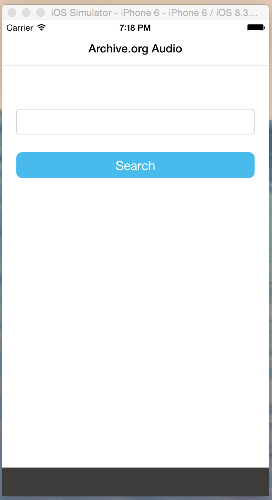
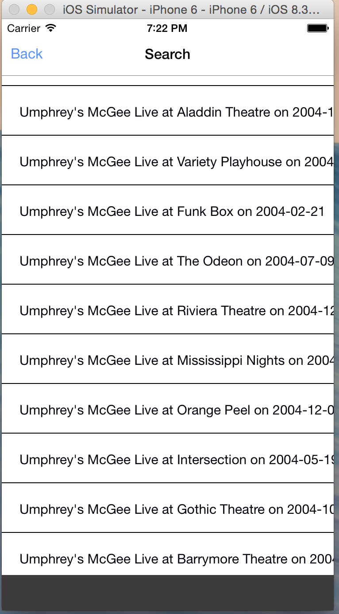
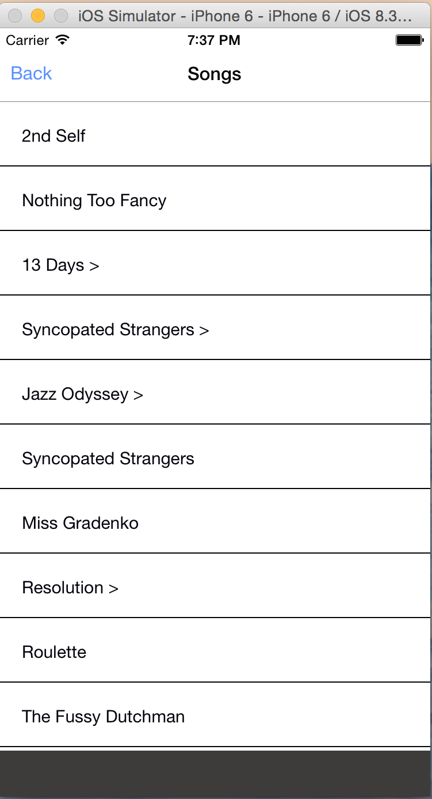
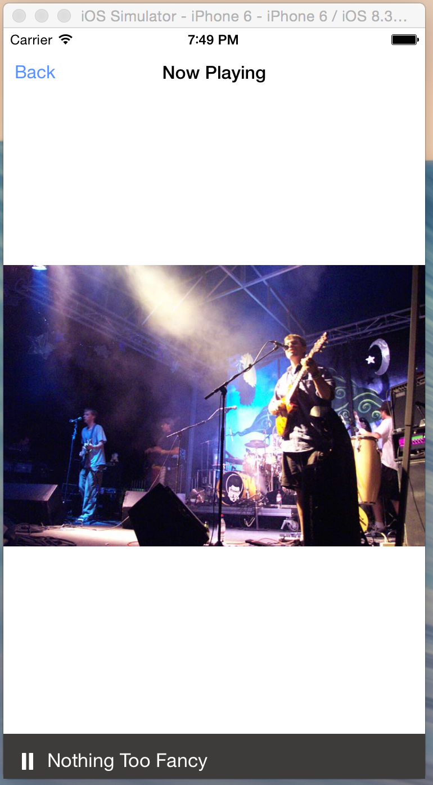

In this part II follow-up post I will go into more detail about code structure for creating this music app. This app is using the alt flux library. Essentially the way it is built, is that I wanted to have a player component available to the user at all times from any screen, ala Spotify. The layout could look something like this:
<Header />
<SceneComponent />
<PlayerComponent />
where the <PlayerComponent /> gives user access to play/pause track at anytime. When building with components, I wanted this component to be completely standalone, but to be able to get notifications from any component deep in the application routing. Thus, that is where flux comes into the picture.

So as you can see from the picture above, the landing screen is really straightforward. It's just a search box with a button. Notice the black box at the bottom, that is the <PlayerComponent /> which we will be updating via flux. Ok, so you type some artist into the search box and click Search. You'll be re-directed to the next screen with search results.

What we did was simple fetch using the parameters that user typed in to archive.org search API.
getShows: function(query) {
var query_string = '';
query.split(' ').map((term,i) => {
(i === this.length - 1) ? query_string += term : query_string += term + '+';
});
return fetch('http://archive.org/advancedsearch.php?q='+ query_string +'&rows=200&output=json&save=yes#raw')
},
What's nice about this is that we get to use the fetch polyfill provided by the facebook team. Keep in mind, all of this code is still running on iOS JavaScriptCore. The results list is displayed using a React Native ListView component:
render: function() {
var elem = this.state.dataSource.$ListViewDataSource_dataBlob.s1.length > 0 ?
<ListView
initialListSize={25}
dataSource={this.state.dataSource}
renderRow={this.renderRow}
/>:
<ActivityIndicatorIOS
animating={true}
style={[styles.centering, {height: 620}]}
size="small"
/>
return (elem);
},
Here I am checking if I have gotten any results back yet. If I haven't, I displayed the ActivityIndicatorIOS otherwise I displayed all of the results in a ListView.
Now, the user gets the nice native scroll feel when they are browsing through the shows list. Next, the user can select an album which will open a track list view:

Again, nothing too complicated going on here. We are just listing out some more results in a ListView. I have to do some more fancy work to get the actual tracks from the show id. What I do is pass in the selected show's id to the next view and use that to grab the songs for that show:
umphAPI.getShowMetaData('https://archive.org/metadata/' + this.props.identifier)
.then(r => {
var data = JSON.parse(r._bodyText).files.filter(d => {
return d.format === 'VBR MP3';
});
if(data.length === 0) return;
var tracks = sortByAll(data, ['name']),
dir = JSON.parse(r._bodyText).dir
this.setState({
dir: dir,
loading: false,
dataSource: this.state.dataSource.cloneWithRows(tracks),
currentTrack: {
url: 'https://archive.org' + dir + '/' + tracks[0].name,
index: 0
},
tracks: tracks
})
});
Next, the user can select a song that they would like to hear. Here is where flux comes into the picture. So basically I have the player component alive at all times sitting down at the bottom of the app. It's waiting to hear a push from the PlayerStore that a track has been selected from an album.
componentDidMount: function() {
this.listenTo(PlayerStore, this._onChange)
var state = PlayerStore.getState()
if(!state) return;
this.setState({
song: (state.tracks[state.index] || {}).title,
playing: state.playing || false
})
},
When it hears that a track has been selected it goes and grabs it from the store and displays that data. Also, I have the actual component which is playing the audio sitting in the root most level of the app. It is listening for the exact same message from the PlayerStore. When it hears it, it goes and grabs the latest audio track so that it can load that URL into the player so that the audio starts playing:
<View>
<Home navigator={this.props.navigator} />
{ this.state.currentTrack.url !== '' ?
<Video source={{uri: this.state.currentTrack.url}}
rate={1.0}
volume={1.0}
muted={false}
paused={!this.state.playing}
resizeMode="contain"
repeat={false}
style={styles.backgroundVideo}
onLoad={this._onLoad}
onEnd={this._onEnd} /> : null }
</View>
I know what you're probably thinking, a Video component to play audio? Oddly enough, this component uses AVPlayer which handles audio great. At the time that I had made this, a standalone audio component had not yet been built. This video component is actually really nice, go check it out.
So, we selected the Nothing Too Fancy track from the show list. An action was dispatched through the dispatcher and into the PlayerStore where a change was emitted to any listeners. The CurrentTrack and Video component both heard these changes, and the track data was updated and the audio started playing!

Great success! I hope you found this post entertaining, Cheers!